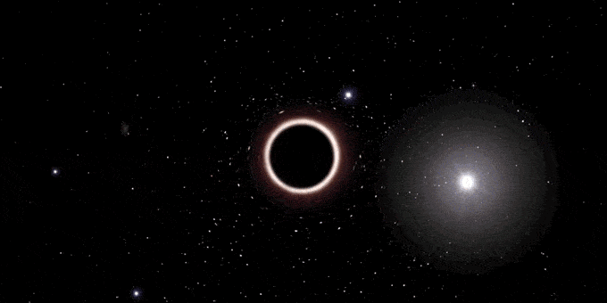
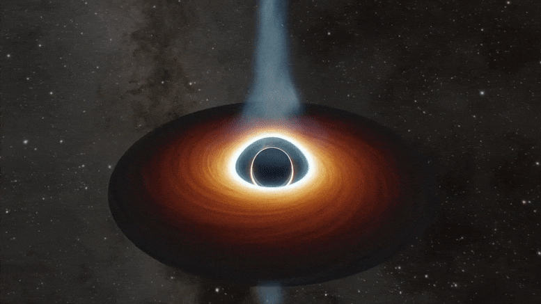

| Estáticos |
Rotación |
Estáticos con carga |
Rotación con carga |
|  |  |
 |
 |
La materia y la radiación son atrapadas y no pueden salir, en pocas palabras, son los restos fríos de antiguas estrellas, tan densas que ninguna partícula material, ni siquiera la luz, es capaz de escapar a su poderosa fuerza gravitatoria. Mientras muchas estrellas acaban convertidas en enanas blancas o estrellas de neutrones, los agujeros negros representan la última fase en la evolución de enormes estrellas que fueron al menos de 10 a 15 veces más grandes que nuestro sol. Los agujeros negros atraen la materia, e incluso la energía, hacia sí, pero no en mayor medida que otras estrellas u objetos cósmicos de masa similar. Esto significa que un agujero negro con la misma masa que la de nuestro sol, no aspiraría más objetos hacia sí que nuestro sol con su propia fuerza gravitatoria.